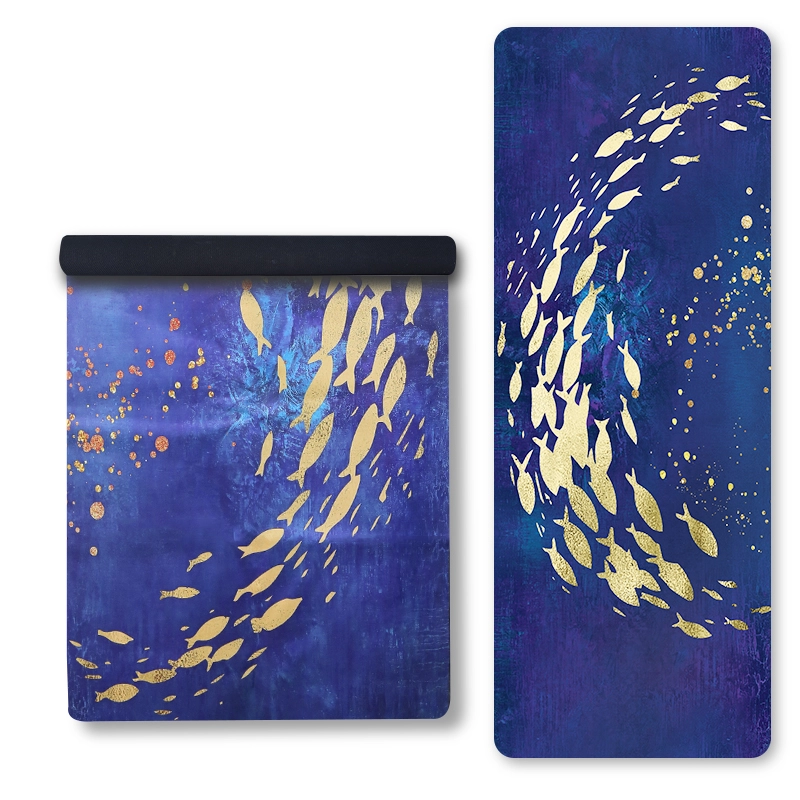
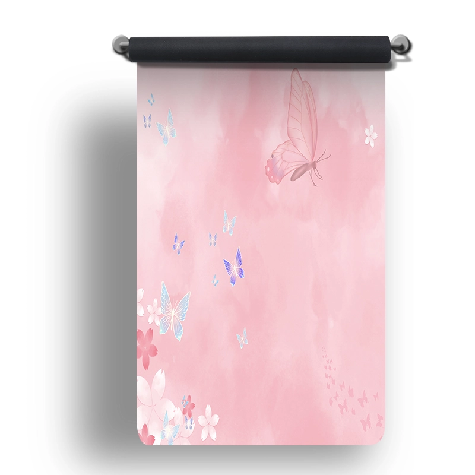

Face supérieure en daim microfibre avec un dos en caoutchouc ou en «TPE », 185x68cm, 1.5mm, épaisseur personnalisable. Doux au toucher et offrant la meilleure surface pour une impression personnalisée à fond perdu.
| Matériau | Daim + caoutchouc |
|---|---|
| Taille | 185x68cm |
| Épaisseur | 1.5mme, personnalisable |
| Quantité minimale de commande | 100 pièces |
| Couleurs | Plusieurs options de couleurs |
| Fonctionnalité | Antidérapant, respectueux de l'environnement, résistant à l'usure |
| Logo | Personnalisation disponible |
| Conformité | ROHS / CE / ISO 9001 / BSCI / REACH |
| Emballage | Sachet en polyéthylène + carton ou sur mesure |
Une surface en daim microfibre sur une base en caoutchouc ou en «TPE». Le daim permet une impression numérique d’un bord à l’autre, sans couture visible entre les motifs, ce qui en fait le choix incontournable pour les illustrations sous licence, les collections saisonnières et les gammes de cadeaux.
Prise en charge complète des services OEM/ODM : matériau, dimensions, épaisseur, couleur, bicolore, impression de logo, gaufrage et emballage. Échantillons physiques prêts en 7 jours selon vos spécifications.
Idéal pour les œuvres d'art sous licence, les collections d'imprimés saisonniers, les studios de yoga et les boutiques de cadeaux.

Daim + caoutchouc · 185x68cm

Daim + caoutchouc · 185x68cm

Daim + caoutchouc · 185x68cm

Daim + caoutchouc · 185x68cm
Demandez dès aujourd'hui un devis personnalisé et des échantillons gratuits.
Contactez notre équipe